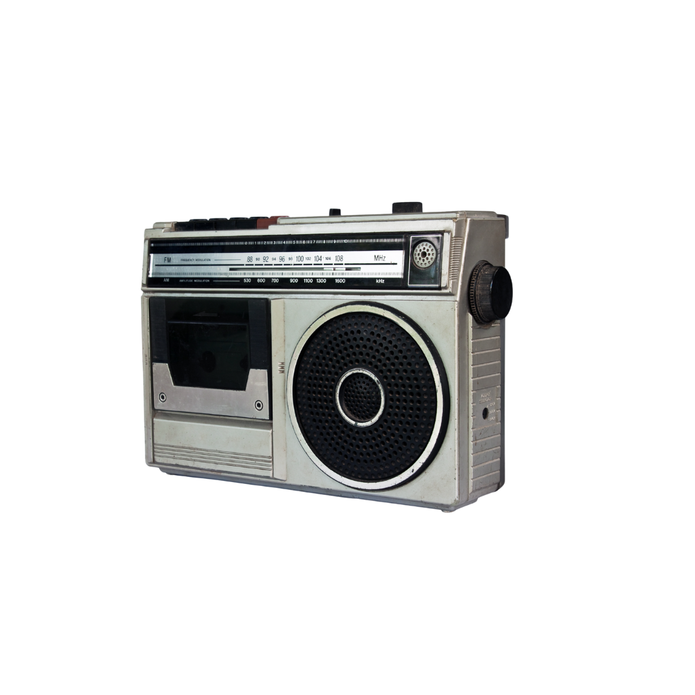

Pregunta
Haz clic en el botón para continuar la entrevista.

Este personaje está inspirado en el paracaidista estadounidense asociado a la foto previa al Día D. En nuestra historia, narra recuerdos con un tono humano y reflexivo: el peso de las decisiones, la camaradería y la dignidad ante el miedo.
Wallace C. Strobel, cuyo semblante inspira a nuestro personaje ficticio, aparece en los preparativos previos al Día D. En esta experiencia, su figura nos permite explorar, con respeto, la memoria de miles de jóvenes que enfrentaron la incertidumbre y el miedo en la Segunda Guerra Mundial.
Su imagen concentra una tensión humana poderosa: el instante antes de que todo cambie. Ese umbral —entre la calma del bunker y el estruendo allá afuera— abre un territorio narrativo para hablar de responsabilidad, camaradería y el peso de las decisiones.
La entrevista busca evitar el espectáculo del combate para enfocarse en lo íntimo: las rutinas, los objetos, las voces y la respiración. El casco que aprieta, la radio que chisporrotea, una carta doblada en el bolsillo; pequeñas anclas para que el recuerdo sea creíble y cercano.
También es una oportunidad pedagógica: exponer cómo el periodismo inmersivo puede construir empatía sin glorificar la guerra, usando recursos sonoros, espaciales y una puesta en escena 3D que acompaña —no sustituye— el testimonio.
En suma, entrevistarlo —aunque sea a través de un personaje inspirado— nos permite hablar de la paz desde quienes conocieron su fragilidad. Que la audiencia escuche, se sitúe y, sobre todo, se pregunte por las costuras que sostienen la vida en común.